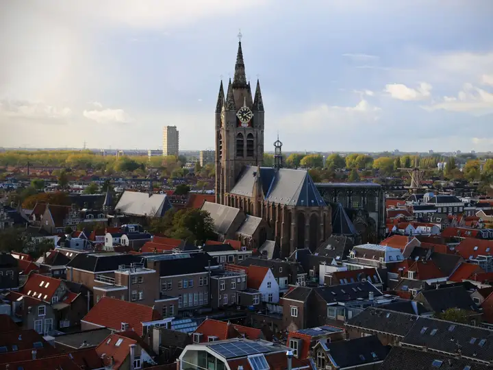
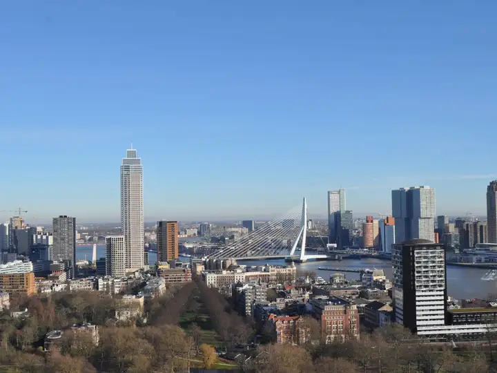
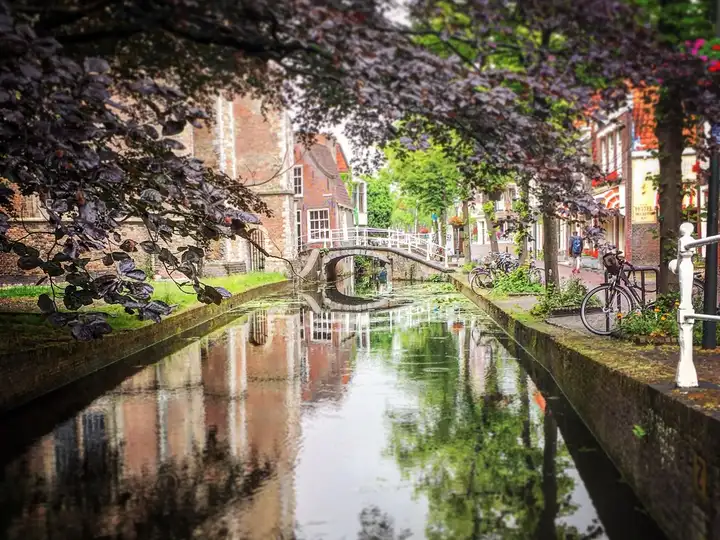
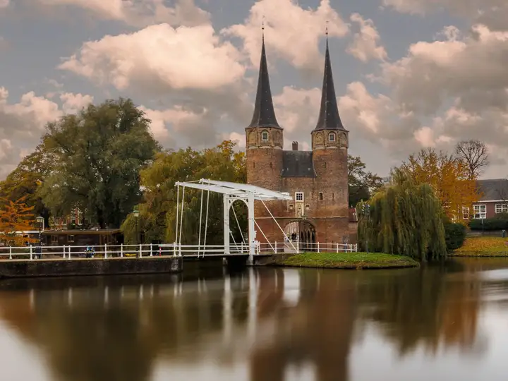
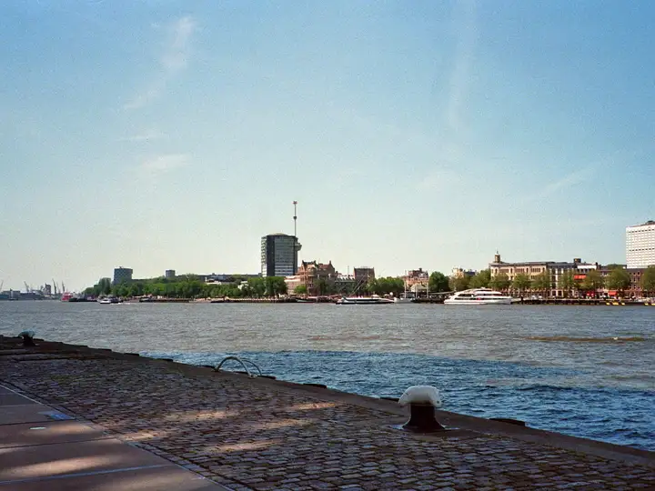

Scoping call
Start of cycle
A structured discovery conversation: your challenge, your constraints, what success looks like. One hour, no commitment.
Delft × Rotterdam · Established 2019
For organisations doing good — made uniquely affordable, by student consultants from TU Delft and Erasmus Rotterdam.
Rotterdam, the Erasmus Bridge over the Maas — photo: Steshka Croes / Pexels
Two consulting cycles a year: October–January and March–June. Each engagement is scoped to a single cycle.
Start of cycle
A structured discovery conversation: your challenge, your constraints, what success looks like. One hour, no commitment.
Week 1
A written scope: what we will answer, what we won't, and what you'll hold at the end. No surprises mid-project.
The cycle
A team of 4–6 student consultants with a dedicated Team Leader. A mid-point review where you course-correct, and working sessions as the analysis firms up. Your time: about an hour a week.
End of cycle
Presented to you, with every underlying analysis handed over. Yours to use, cite, and build on.
We are the first multi-city branch of 180 Degrees Consulting — the world's largest university-based consultancy, with branches across dozens of countries. The technical depth of Delft and the business acumen of Rotterdam, pointed at problems that matter.
Our focus is impact — but it isn't a gate. We work with almost any organisation trying to do good. If that's you, you're in the right place; if you're not sure you fit, ask us anyway.
Read our full mission, and how we fit into 180DC worldwide →

Each engagement is scoped to one area. These six are where most of our work sits — the branch is always expanding and takes projects case by case. If your challenge sits outside this list, ask anyway.
Photographs are of Delft and Rotterdam, the two cities we work from — not client sites.




An AI-assisted senior review our branch builds in-house and publishes in the open: evidence, logic, and clarity checked against professional consulting standards.
“A finding must quote the document verbatim, or stay silent.”
The consultant does every rewrite; the reviewer only teaches. We are the only student consultancy we know of that can show you its quality system rather than just claim one.
Our first case studies are being prepared for publication, with client consent. Until then, here is exactly what a 180DC engagement produces: a board-ready strategy deck, every underlying analysis handed to you, quality-assured before it reaches your desk.
No consulting experience required. Engineers, designers, economists, and social scientists wanted. We recruit twice a year, once per consulting cycle: Cycle 1 recruits in September; Cycle 2 recruits in January/February.
No experience required — and we mean it. You'll work directly with a real organisation's leadership for a cycle, with a trained team and a Team Leader around you.
Experience is wanted here: the usual path is one cycle as a Consultant, then stepping up to Team Leader the next. You'll own scope, client relationship, and quality for your project.
Reserved — committee photos awaiting photo session Roster pending confirmation against Monday.com
A scoping call is one hour and commits you to nothing. Students: our recruitment windows open each cycle.